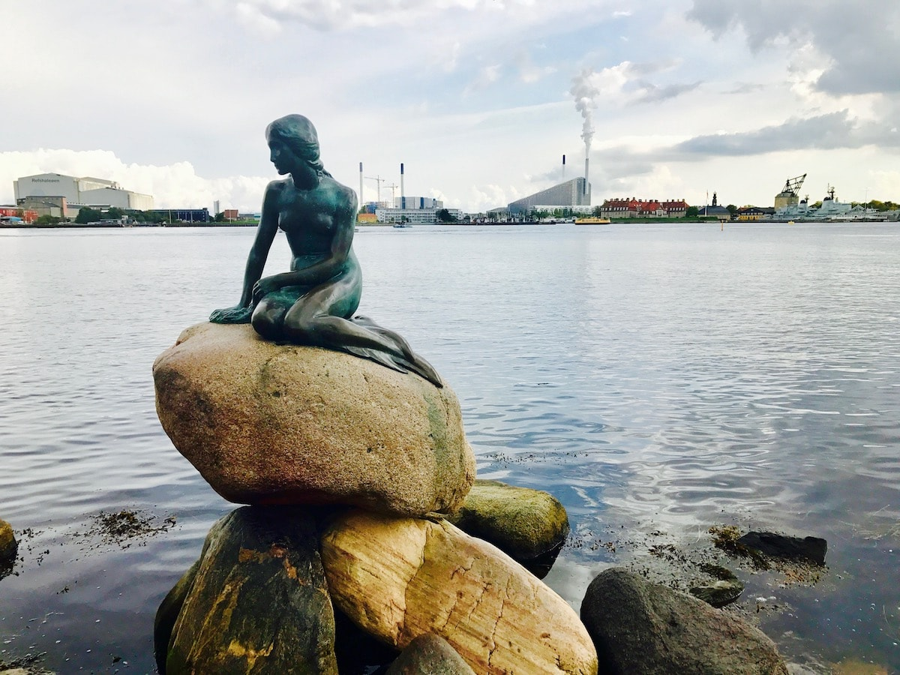
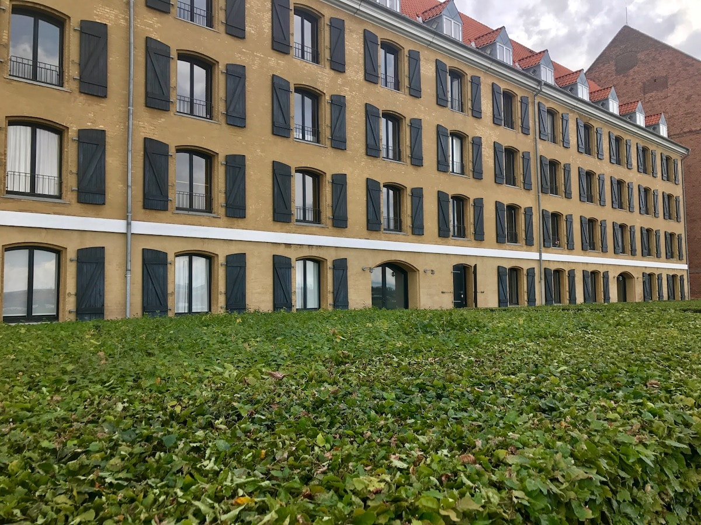
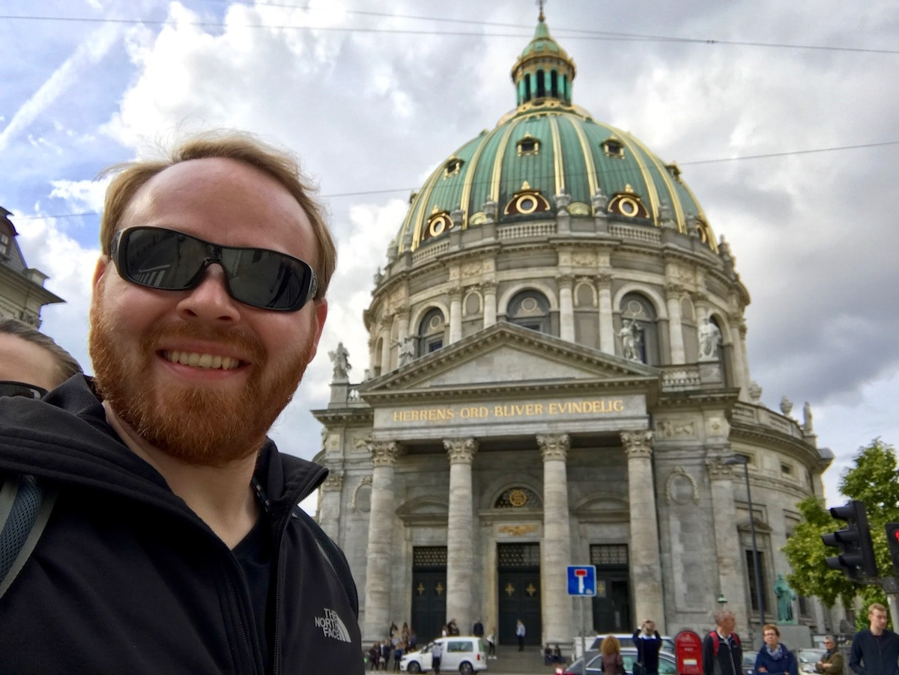
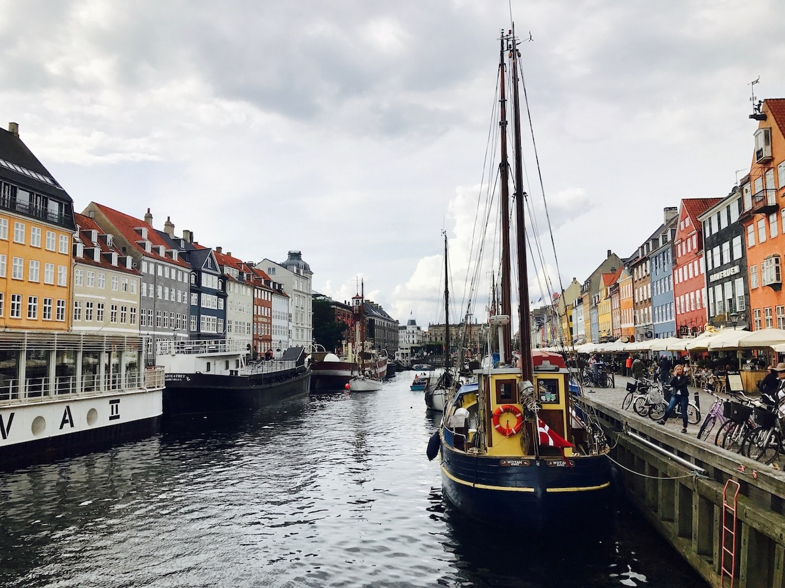
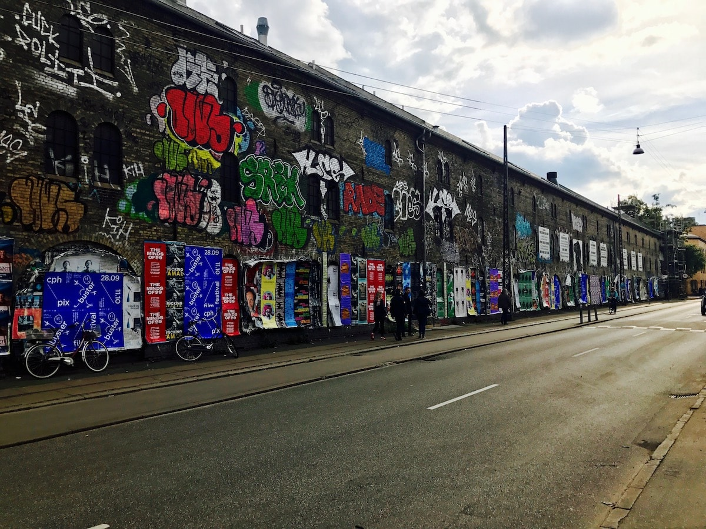
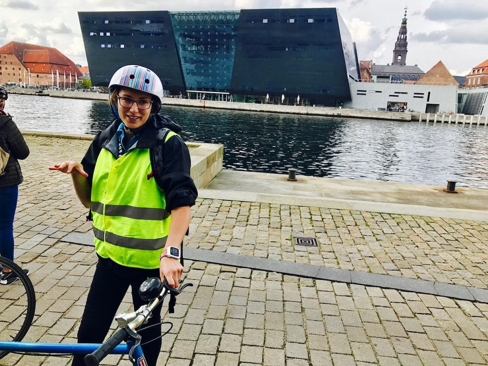
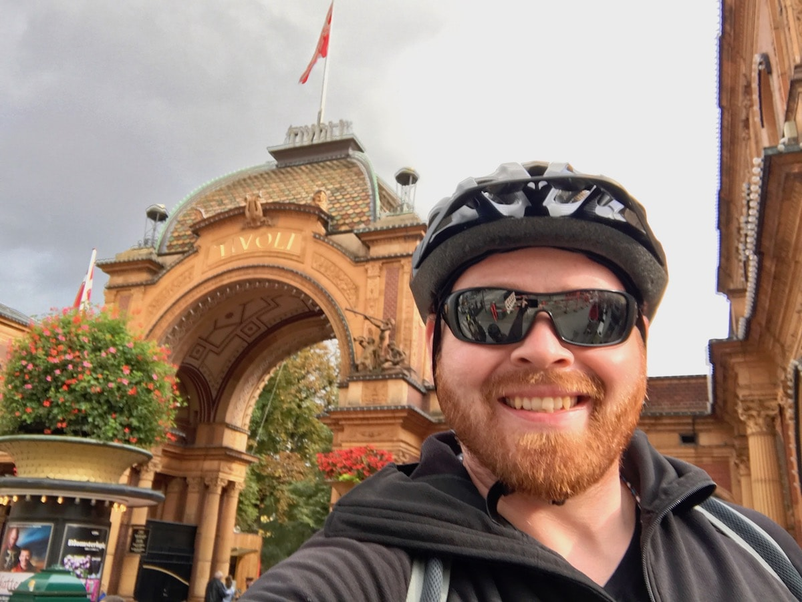
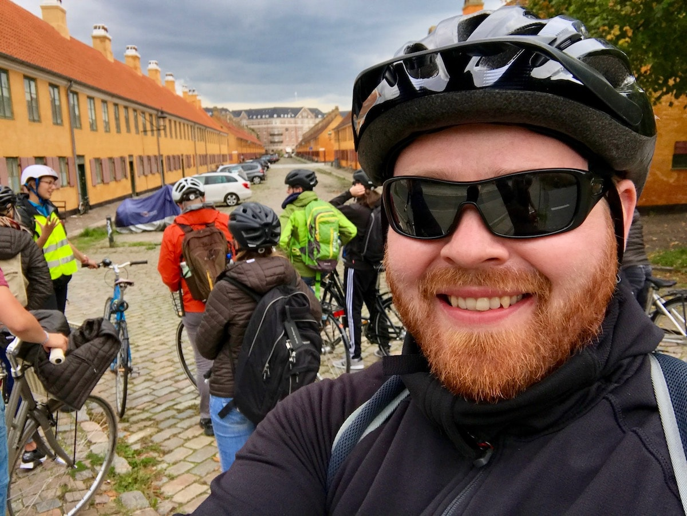
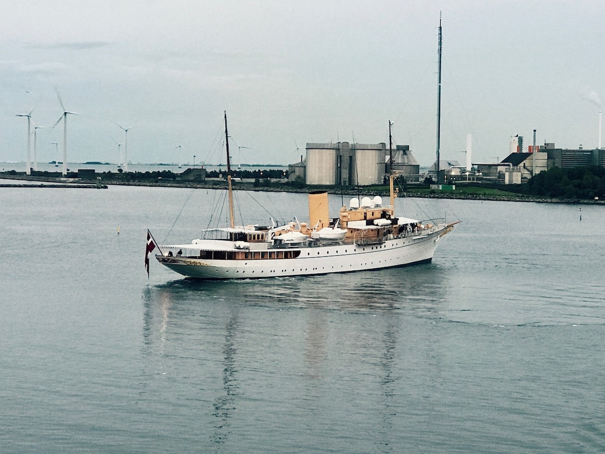

How to spend a day in Denmark - A bike tour of Copenhagen
Biking my heritage in Copenhagen
Many moons ago, my family made the treacherous journey across the Atlantic Ocean to immigrate to the United States. What they left behind was a life in Denmark. Now, much to my surprise, and thanks to a company cruise I took with trivago, I find myself arriving at the shores of my forefathers. I only have a day to get to know this land, and I can’t think of a better way to do it than a bike tour of Copenhagen! #yeahbike!
My bike tour group had 15 people in it and we were led by an awesome guide name Julia. It was clear from the start that Julia understands that she lives the dream. She just bikes all day and gets paid to meet people from all over the world. That is a pretty sweet gig if you ask me!
Want to join me next year for trivago on Tour? See trivago’s open career opportunities.
I will share some photos and history lessons learned while on the tour in the article below, and to help you follow along, here is a map of the route we rode.
Statue of The Little Mermaid at Langelinie
Perhaps the most iconic statue in all of Denmark is this statue of The Little Mermaid based on the fairy tale by Dutch author Hans Christian Andersen. It is the same story which inspired Disney’s mermaid story, but here in the presence of the original mermaid, I learned that this mermaid never found her prince and instead was turned into seafoam. Rather tragic.
So, some statue history: created in the early 1900s, the sculptor had a very difficult time finding a female model who would sit for the artist int he nude. It wasn’t considered very ladylike at the time. Eventually, a member of the national ballet came forward and volunteered to be the model, but with one caveat: the sculptor could not use her head. Now the mermaid had a body but was headless, and so the sculptor instead placed the head of his own wife upon the mermaid.
In the years since, the mermaid has been decapitated and vandalized a number of times. Thanks to modern reinforced steel, the neck has been reinforced and it is believed that the vulnerability is no longer an issue. Let’s see.
Also pictured here in the background is a building with a very pitched roof and white smoke coming out of it. This building totally fascinates me. The Amager Bakke Waste Incinerator is Copenhagen’s new waste management facility. Its burn-off is so clean that it is surrounded by a city park and recreational area, and that pitched roof is a ski slope! It won’t open to the public until 2020, but I plan to get a ski pass as soon as I can and add it to the list of exotic places I have skied, like the time I skied in Dubai.
The facility also features an 85-meter high observation desk with cafe deemed as the best view of Copenhagen, one of the world’s tallest climbing walls, and 10 hiking trails through landscaped forest.

Statens Museum For Kunst (artist museum)
Though we didn’t get to go inside the National Gallery of Denmark, just passing by the back of the building was pretty impressive. These thick hedges next to the waterfront promenade made an impression. In fact, it wasn’t until after I got home and did some additional research that I came to know that this was a museum at all. Still, it called for being photographed and it a typical example of Dutch architecture along the waterfront of Copenhagen.
Should I return to Copenhagen I will certainly take the time to pay a visit to the museum. The collection of nearly 9,000 paintings and sculptures, 240,000 works of art on paper, and 2,600+ plaster casts of figures from ancient times will be enough to keep me busy, especially if I find myself in Copenhagen on a rainy day.

The Queen’s Residence - Christian IX’s Palace
Unlike in England where you can’t get anywhere near the Queen’s residence, the Dutch queen has no closed gates, just a few ceremonial guards who will bark at you if you get too close. The building behind me is one of four nearly identical buildings which surround the courtyard in which I am standing. The only discernible thing about this building out of the other three is that it has five chimneys. The others have four.
They say this chimney was added because of the current queen, Queen Marguerite, is a chain smoker. In fact, she has been requested to spend less time in the public eye because the Dutch, though they love her, would prefer it if their monarch was not seen smoking in public. Rather than ditch the habit, the queen just stays out of public view!
The royal family is revered. This comes in part from their non-elitist lifestyle. If you stand among the palaces at the right time, it is highly likely that you can see the crown prince departing the palace taking his kids to and from school on a bicycle!
And here is a fun linguist fact: in Dutch, the formal “you” is only used when addressing or referring to the Queen. At any other time, you use the casual “you” form. A stark difference from German!
Frederik’s Church
The central cathedral of Copenhagen is also known as The Marble Church. The stones are, of course, marble, but more notably, the marble on the interior of the church is dark. The highlights against the marble come in the gold details and statue figures of white marble. The dome is the largest in Scandinavia and is fashioned after St. Peter’s Basilica in Rome.

The New Haven Canal
Copenhagen is webbed with canals. Similar to Amsterdam and other European coastal cities, Copenhagen’s canals define the city’s landscape. Here is one such canal, lined with shops, cafes, and houseboats. I imagine that the colorful buildings go a long way in sustaining the naturally cheerful mood of the Danes during the cold, wet, winters. You can see that even on this cloudy and grey day, this canal scene looks most welcoming!

Freetown Christiania
The borough of Christianshavn is an anarchical district in Copenhagen which hasn’t had any influence from the Dutch laws for decades. The 1,000 or so inhabitants of the district maintain their own rules which are reflective of the American hippie movement of the 1960s and 1970s. However, because of the thriving cannabis trade in the area, the government has started to step in a bit in recent years and is working to negotiate the refederalization the neighborhood.
For now, Christiania remains free and independent, but those days are likely numbered.

The Royal Library
The archives and royal library of Denmark have recently been moved into this beautiful and modern building. The library collection contains over 500 years of Danish literary works and other important relics. This is one of the largest libraries in the world and is the biggest in the entire Nordic region.
This is Julia, our awesome tour guide.

Copenhagen from the Langebro Bridge
If you look at the map I provided at the beginning of this post, then you will see that this bride crossing is located that the southern-most point of our Copenhagen bike tour. This also means we have reached our halfway point in the tour. We took a short break and snapped some photos of the town behind us. The Copenhagen skyline, such as it is, is not dominated by towering buildings but rather with more historic buildings which maintain Copenhagen’s feeling of European authenticity.
Tivoli Gardens
Opening in 1843, Tivoli is the second-oldest operating amusement park in the world. The oldest is also in Denmark just a few miles away, and is a staggering 250 years older, having opened in 1583! I guess the Danes have always known how to have a good time!
Tivoli is a “seasonal park” in that it is only open during the warmer months of the year. Throughout all of Europe, Tivoli is the second most-visited such seasonal park.
Though we just rode our bikes along the exterior wall and past the main entrance, pictured below, I easily got the impression that this is an impressive place. One other thing I learned is that millions of Danes have an annual membership to Tivoli Gardens and visit there with friends and family the same way New Yorkers might take a stole through Central Park. So the experience is presumably a bit more casual than Disneyland or King’s Island.

The small homes of Nyboder (old barracks)
On the way back to our cruise ship, we passed by the old historic buildings of the colonial Danish Navy. The neighborhood now known as “Nyboder” is named as such for the hue of yellow which all of the buildings are painted. The original colors were red and white, like the Danish flag, but the new color makes a striking impression, and thus the name for the neighborhood.
Today, Nyboder is mostly residential. The cute row homes look cozy and full of character. The cobblestone and brick streets offer a wonderful visual texture. The streets even have awesome names, such as “Unicorn Street.”
I couldn’t help but think to myself that if I lived in Copenhagen, I would want to live here.

Her Danish Majesty’s Yacht Dannebrog
This was a special treat! At the beginning of our bike tour, we passed within view of the royal yacht at port, but it was very far away and the photo didn’t really come out. Upon returning to my cabin on the cruise, I opened up my balcony and the HDMY Dannebrog was sitting directly outside of my window!
This ship is the oldest royal-yacht in the world still in service. It was built just before WWII and is maintained by the Royal Navy. I watched the ship perform some maneuvers, more turning in a circle, really, and then it sailed away into the sunset and out into the open ocean.
God rejse! (bon voyage in Danish)

What a great day this was!
Well, I certainly wouldn’t have expected to see so much and learn so many interesting things from just a few hours in Copenhagen, but I really did. If ever you find yourself needing to make good use of just one day in Copenhagen, then I highly recommend taking a bike tour.
Have you been to Copenhagen before? Do you have other suggestions or a favorite place? Please share your experiences in the comments below! You can also follow me on Twitter at @judsonlmoore to get more updates and to message me directly.
Would you like a postcard from Denmark? Click here now!
What do you think? Could you handle trivago on Tour? Maybe you can join next year! If you are interested to join me in 2018, just take a look at the open careers at trivago! If anything looks interesting to you, let me know and I will be happy to chat with you about a career in trivago.